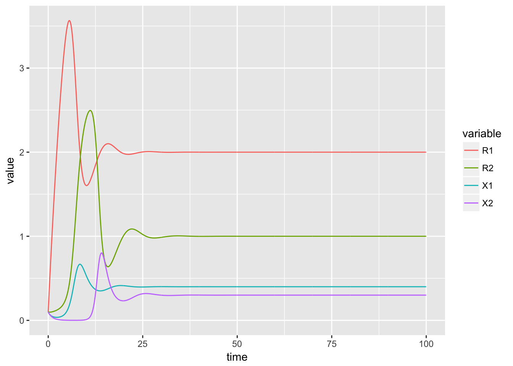

This one is consumer-resource model of two consumers competing for single supplied resource. Specalist secretes another resource that itself cannot use where another generalist can.
## Consumer-resource model, 2 species
# Parameters
P <- 2
S <- 2
J <- .1
mm <- 1
Rin <- c(10, rep(0, P-1))
timemax <- 100
p <- 0
b <- .5
m <- rep(mm, S)
# Uptaking rate
if (P > 1) {
u <- matrix(0, nrow=P, ncol=S)
u[1,] <- 1
u[,2] <- c(p, 1-p, rep(0, P-2))
} else if (P == 1) {
u <- matrix(c(1, p, rep(0,S-2)), nrow=1)
}
# Conversion efficiency
w <- matrix(1, P, S)
w[1,1] <- 1-b
stoi <- array(0, c(P,P,S))
for(i in 1:S) diag(stoi[,,i]) <- -1
stoi[2,1,1] <- b
##
# Packages
library(deSolve)
library(reshape2)## Warning: package 'reshape2' was built under R version 3.4.3library(ggplot2)
# Time sequence
time <- seq(0, timemax, by = 0.1)
# Parameters: a named vector
parameters <- list(J = .1,
Rin = Rin,
p = p,
b = b,
P = P,
S = S,
u = u,
w = w,
m = m,
stoi = stoi)
# initial condition: a named vector
state <- setNames(c(.1, rep(.1, P-1), rep(.1, S)),
paste0(c(rep('R', P), rep('X', S)), c(1:P, 1:S)))
# R function to calculate the value of the derivatives at each time value
# Use the names of the variables as defined in the vectors above
CRmodel <- function(t, state, parameters){
with(as.list(c(state, parameters)), {
# Create a vector of R
RR <- sapply(paste0('R', 1:P), function(x) eval(parse(text=x)))
# Create a vector of X
XX <- sapply(paste0('X', 1:S), function(x) eval(parse(text=x)))
dR <- NULL
for (j in 2:P) eval(parse(text=paste0('dR[', j,']=J*(-R',j,')+sum(diag(t(stoi[',j,',,])%*%(u*RR))*XX)')))
j = 1
eval(parse(text=paste0('dR[', j,']=J*(Rin[',j,']-R',j,')+sum(diag(t(stoi[',j,',,])%*%(u*RR))*XX)')))
dX <- NULL
for (i in 1:S) eval(parse(text=paste0('dX[', i,']=X',i,'*(sum(w[,',i,']*u[,',i,']*RR) - m[',i,'])')))
# Set a threshold for extinction
# dX[XX<=0.001] <- 0
return(list(c(dR,dX)))
})
}
# ode
system.time({
out <- ode(y = state, times = time, func = CRmodel, parms = parameters)
})## user system elapsed
## 0.698 0.010 0.720out.df <- as.data.frame(out) # Required by ggplot: data object must be a data frame
out.m <- melt(out.df, id.vars='time') # This makes plotting easier by puting all variables in a single column
ggplot(out.m, aes(time, value, color = variable)) +
geom_line() +
xlim(0, timemax)